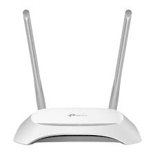

Identitas Diri
Nama : Hasbi Juwadi
NIM : 607012500090
Kelas : D3SI-49-01
Mata Kuliah : Jaringan Komputer
Tentang Saya
Saya adalah mahasiswa Program Studi D3 Sistem Informasi Universitas Telkom. Website ini dibuat sebagai bagian dari tugas mata kuliah Jaringan Komputer untuk memahami konsep web hosting dan penerapan layanan web.
Perangkat Jaringan Komputer
Router (Perangkat Perantara)

Router adalah perangkat jaringan yang berfungsi untuk menghubungkan dua atau lebih jaringan komputer yang berbeda, baik jaringan lokal (LAN) maupun jaringan luas (WAN). Router beroperasi pada lapisan jaringan (Layer 3) dalam OSI Layer. Fungsi router adalah mengelola lalu lintas antara jaringan-jaringan dengan meneruskan paket data ke alamat IP yang dituju dan memungkinkan beberapa perangkat menggunakan koneksi internet yang sama.
Fungsi Router:
Fungsi Router dalam jaringan memiliki peran yang sangat spesific dalam menunjang proses pengiriman data. Router memiliki beberapa fungsi utama dalam sebuah jaringan, yaitu:
- Menghubungkan jaringan yang berbeda
- Pemisahan Jaringan
- Mengarahkan Paket Data
- Menerapkan Keamanan
- Mengelola Lalu Lintas Jaringan
Sumber Referensi:
https://it.telkomuniversity.ac.id/router-adalah/Lampiran Tutorial
Berikut adalah file tutorial yang dapat diakses atau diunduh: